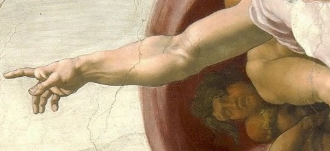

HANDUPDay 8 of 40

Hand of God

Everyone says “let me know if I can help”.Handup turns it into a list of real things they can do, the week you lose your job.
Things, favours and time.Your people pick something off the list and you tell Handup it's sorted.
Handup
online